تفتخر بلدية أسيا بتراثها الثقافي الغني ومعالمها التاريخية التي تعود الى قرون مضت وما قبل المسيح. نرحب بكم لاكتشاف المواقع الاثرية والتقليدية التي تجسد هويتنا الاسيوية الجبلية الفينيقية الاصيلة
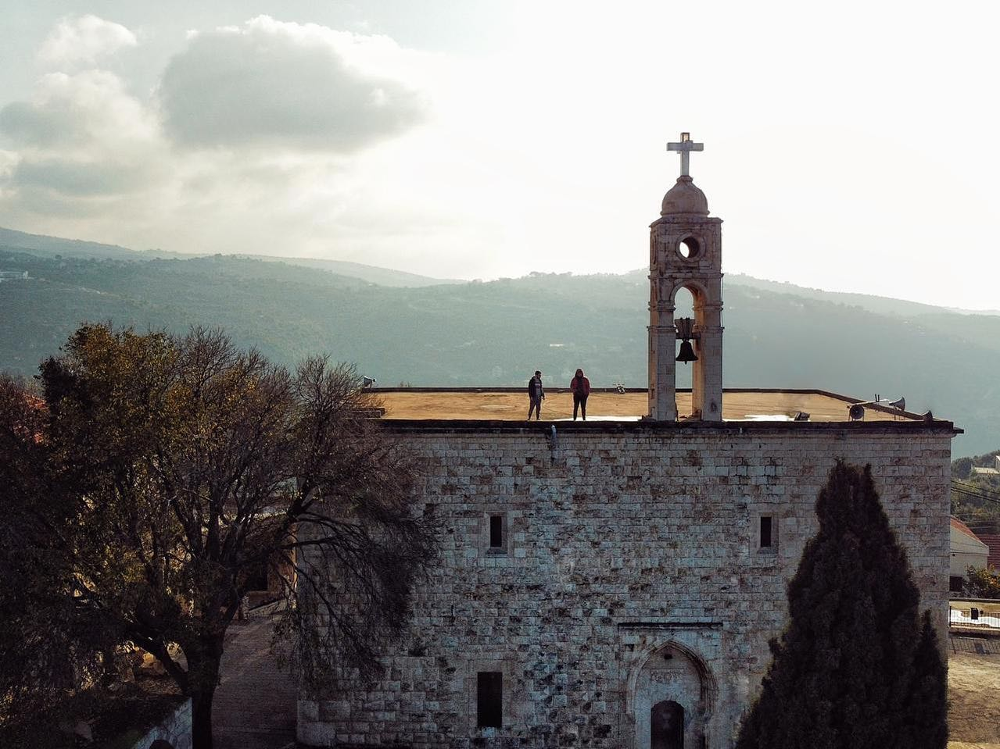
تُعرف بكنيسة مار جرجس المارونية، وتتميّز بجمالها الرائع وحجمها الكبير، إذ تحتل المرتبة الأولى من حيث كونها أكبر كنيسة لمار جرجس في قضاء البترون.
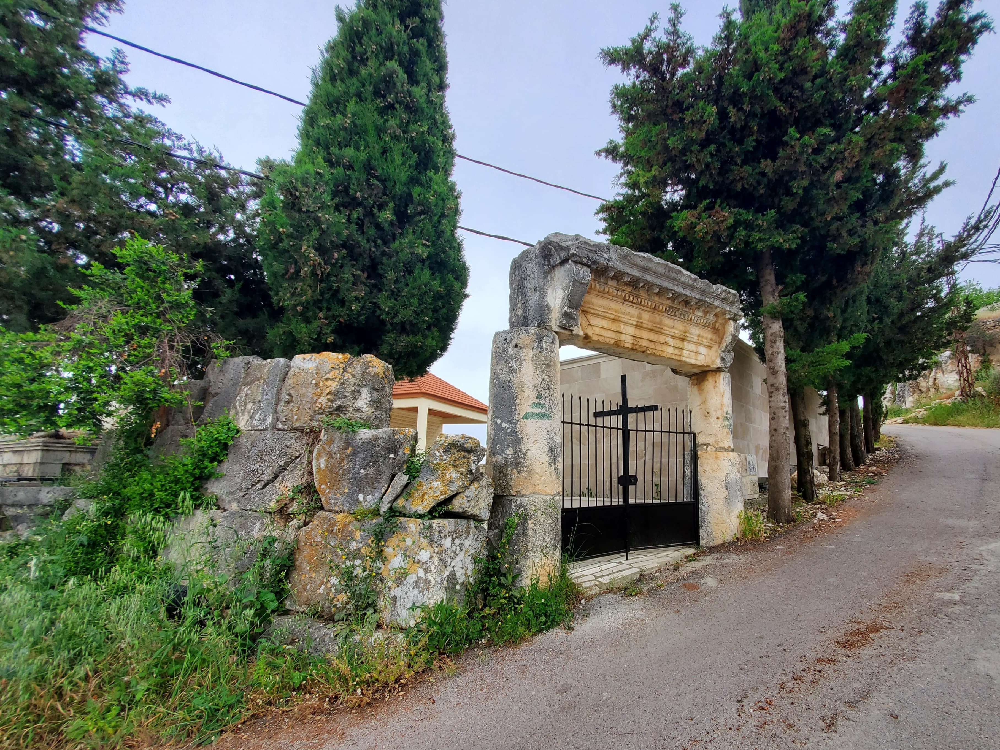
هو دير بُني في أيام الإمبراطورية الرومانية، وسكنه راهب كان طبيب المنطقة، ويُقال إنه القديس آسيا، ومن هنا سُمّيت البلدة باسمه.
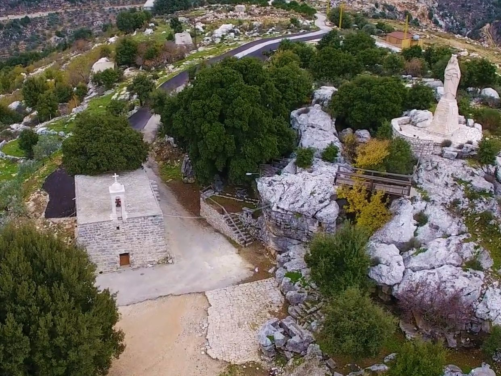
بئر على أساسات الكنيسة محفور في الصخر القديم، بُني على معلم روماني قبل القرن السابع عشر، وتُعرف بسيدة "هيداك القاطع" أو "سيدة نايا" أو ما تُعرف به اليوم بسيدة القلعة.
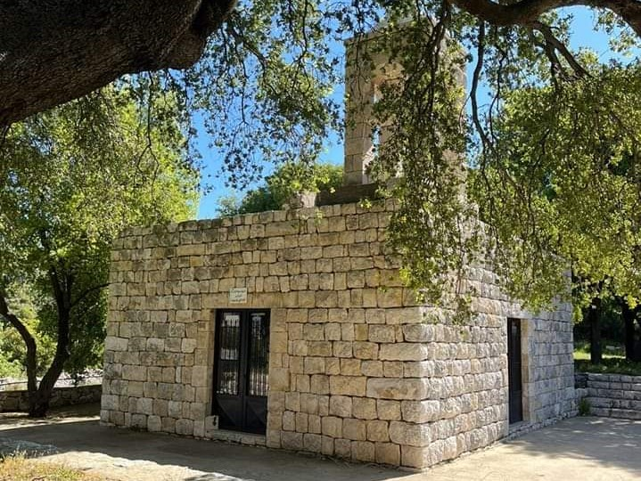
هي القديسة العراقية فاسا، ولها كنيستان فقط في العالم: واحدة في العراق، وأخرى في لبنان – آسيا. وكانت فاسا قرية ومن أغنى المناطق، عُرفت بجمالها وطبيعتها الخلابة.
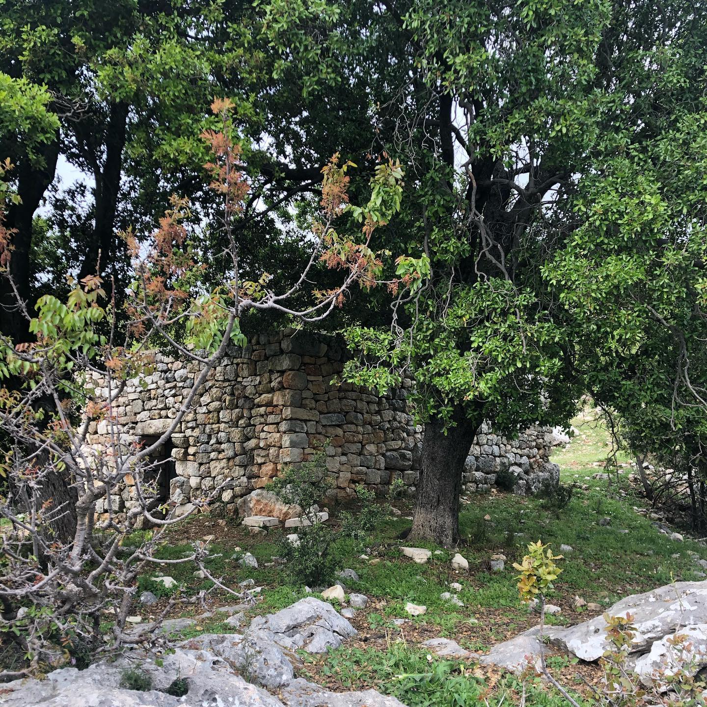
هنا تروي الحجارة قصة ماضٍ لم يمسّه الزمن، وصمودٍ محفور في أرض هذه البلدة، آسيا، بين جبالها وصمت الطبيعة.
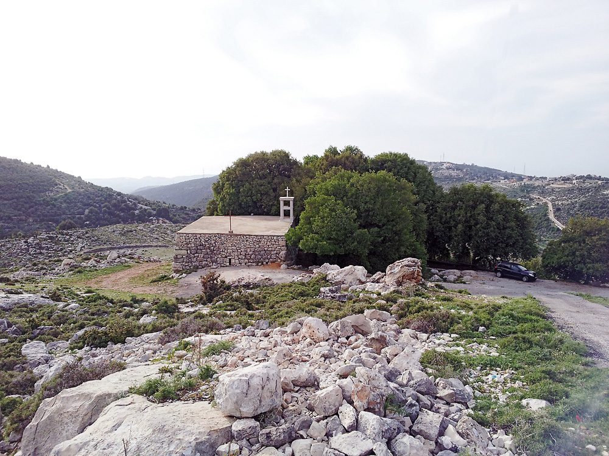
دير القديس توما هو من أهم المعالم الدينية والتاريخية في لبنان، ويعود تاريخه إلى قرون مضت، ويُعد مكانًا جذابًا للاستمتاع بالهدوء والسكينة والصلاة.
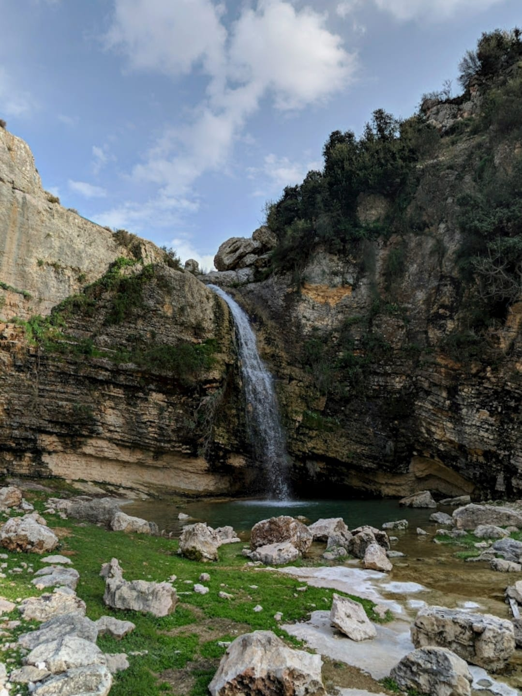
من بين أفضل 100 موقع مائي وينبوع في لبنان. يُعد شلال وبركة سيدة القلعة من أبرز المعالم الطبيعية والسياحية في المنطقة ولبنان.
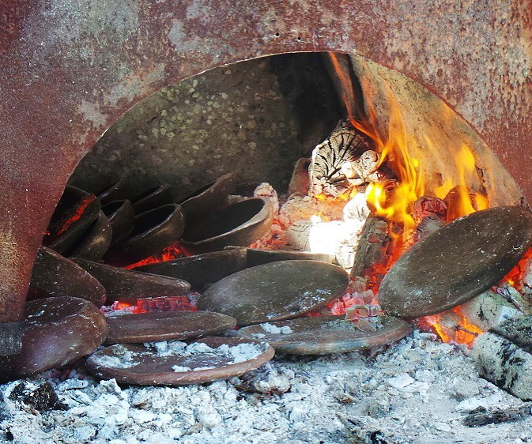
فخار آسيا هو حرفة تقليدية في البلدة – قضاء البترون شمال لبنان، توارثها الأهالي عبر الأجيال، من دون اي تطور، محافظين على تقنيات صناعة الخزف اليدوي الأصيل.
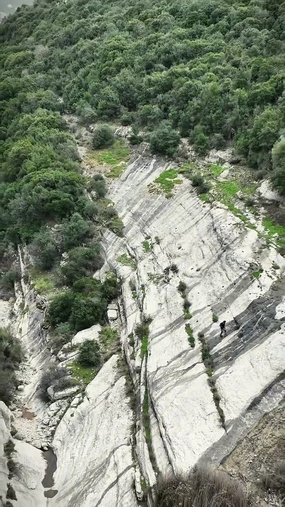
تُعد عين البلاط من أجمل المناطق في آسيا، وتتميّز بينابيع مياه عذبة تنبع من الجبال، وتشكل مصدر انتعاش للزوار، وبتاريخ كبير وواضح في معالمها.
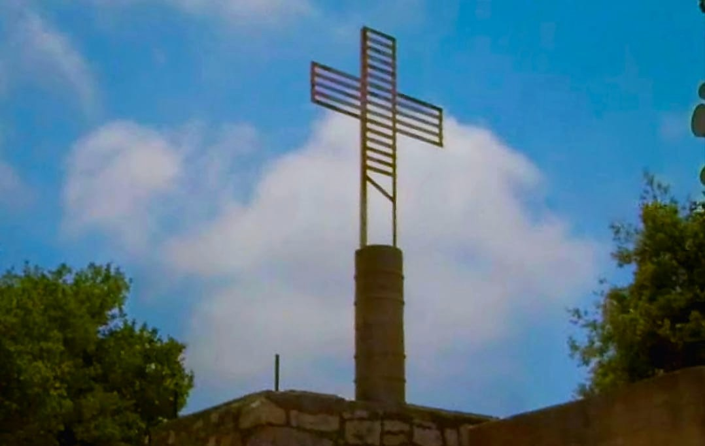
يتميّز الموقع بجماله الطبيعي الخلّاب، إذ يقع على قمة جبل مطلّة على وسط البترون والساحل، ويوفّر رؤية بانورامية لكامل المنطقة.
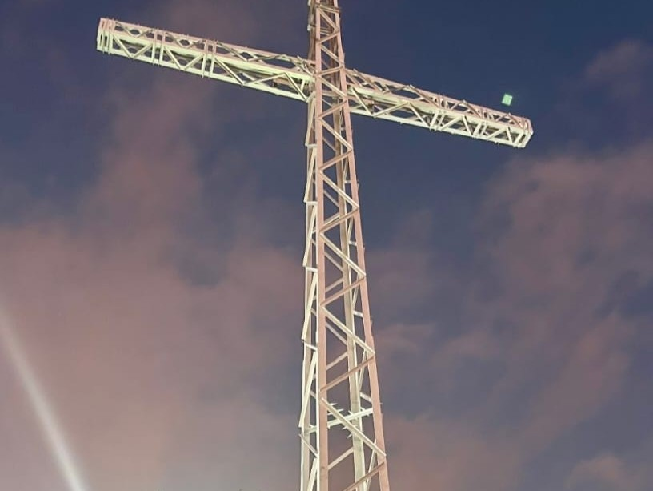
يقع بين اشجار السنديان في منطقة حرجية في أصيا، ويتميّز الموقع بجماله الطبيعي الخلّاب، إذ يقع على سفح جبل مطلّ على وسط البلدة، ويوفّر رؤية شاملة للبلدة.
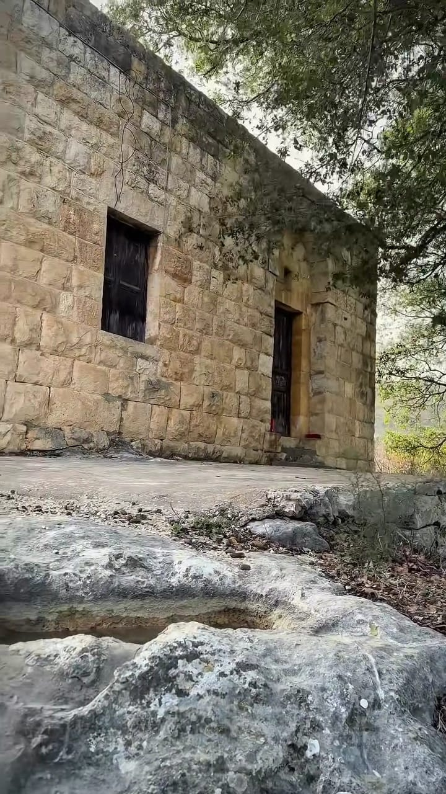
أحد الألقاب المعطاة للعذراء مريم، ويعبّر عن إيمان المؤمنين بدورها شفيعةً ومعينةً في أوقات الشدّة والضيق، ويعكس الثقة بمحبتها ورحمتها.
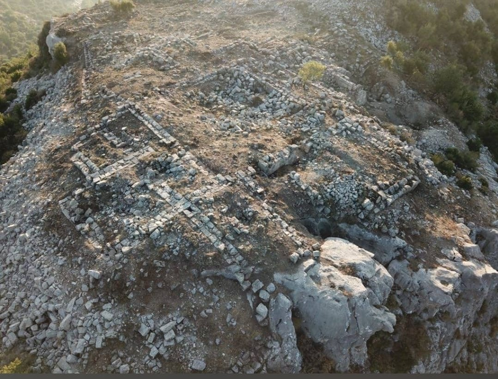
يقع الموقع فوق بلدة بشتودار في قضاء البترون شمال لبنان, ويُعرف باسم قلعة الحصن ويعرف بنقطة دلتا مكان إلتقاء 3 قرى, يُستخدم كنقطة مراقبة وإطلالة تاريخية.
اشهر المطاعم والمقاهي